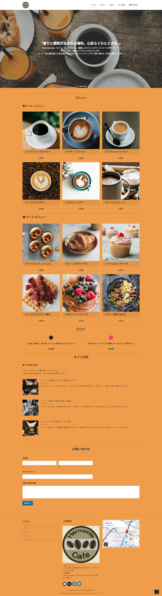

「Cafe Harmonie」オーナー 山口 修司 様から依頼を受けて制作したHPになります。
URL
https://third.yu-tawebcreater.com/
担当
WordPress構築・デザイン・コーディング
サイトの目的
店舗の認知と集客
使用技術
WordPress/Adobe Photoshop
デザインについて
背景は明るい茶色でカフェの雰囲気を演出しております。メイン写真は、文字が浮かび上がり、白色で強調して見えやすいデザインにしております。また、おしゃれに演出できるように動きのあるWebサイトに設計しております。
コーディングについて
トップ画面での画像スライド、ドリンク・フードメニューの紹介、口コミ情報の表示、カフェオーナーのブログの更新、お問い合わせフォーム、GoogleMapでの店舗所在地の情報等などを実装させております。